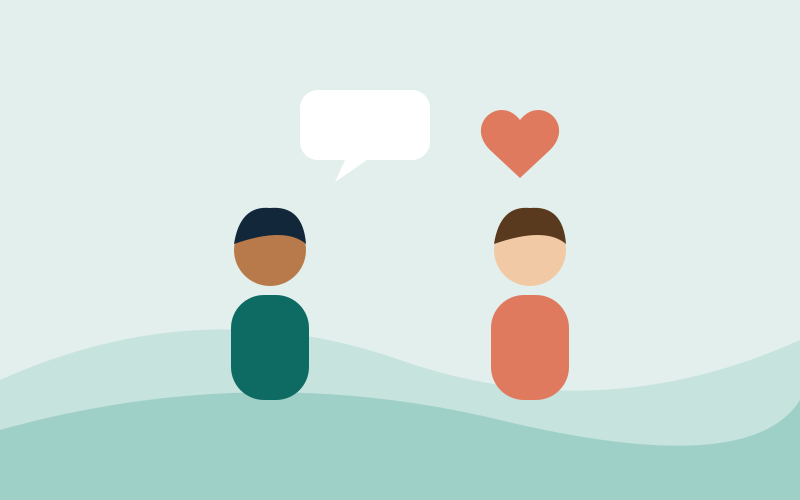

- Ask. “I noticed you seem tired lately. How are you, really?”
- Listen. Let them finish. Do not rush to fix or compare.
- Say thanks. “I am glad you told me. You are not alone.”
- Offer next steps. Go with them to the guidance office, or call a hotline together.
- Keep checking in. A short message later shows you care.
Be careful not to promise to keep a secret if their safety is at risk. Tell a trusted adult.

Being there for a friend
Five small steps for supporting a classmate who seems down.
Text version (transcript)
- Ask: how are you, really?
- Listen without rushing to fix.
- Say: I am glad you told me.
- Offer to go with them to the guidance office or call a hotline.
- Keep checking in. If they are in danger, call 911 and tell an adult.
Silent video with on-screen text and captions. Original work, see attribution.
In danger right now? Call 911. For emotional crisis or suicidal thoughts, call 1553 (toll-free). See all crisis numbers.